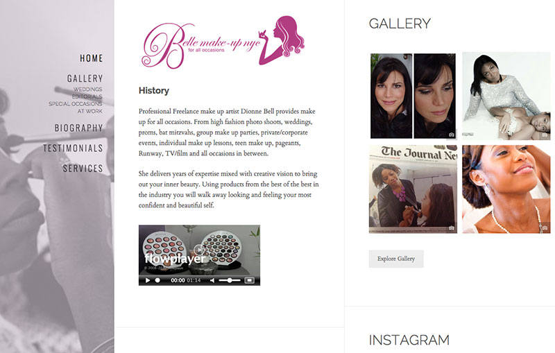

	<section class="portfolio-l-inline">
		<div class="container">
			<div class="row">
				<div class="col col-sm-8 col-xs-12 img-preview">
					
				</div>
				<div class="col col-sm-4 col-xs-12">
					<h2>Belle Make-up NYC</h2>
					<span class="block-label">The Challenge</span>
					<p>Redesigned Wordpress site for hip New York make-up artist Dionne Belle.</p>
					<span class="block-label">The Work</span>
					<p>Customized a Wordpress editorial theme featuring an instagram photo feed. Fully responsive.</p>
					<span class="block-label">Url</span>
					<a href="http://www.bellemakeupnyc.com/" target="_blank">bellemakeupnyc.com</a>
					<span class="block-label">Skills</span>
					<span>html5, css3, Wordpress</span>
					<hr/>
					<div class="portfolio-nav">
						<a class="fa fa-chevron-left" href="portfolio-ajordan.html" title="Previous"></a>
						<a class="fa fa-th" title="List" href="index.html#portfolio"></a>
						<a class="fa fa-chevron-right" href="portfolio-gpcad.html" title="Next"></a>
					</div>					
				</div>							
			</div>
		</div>		
	</section>
